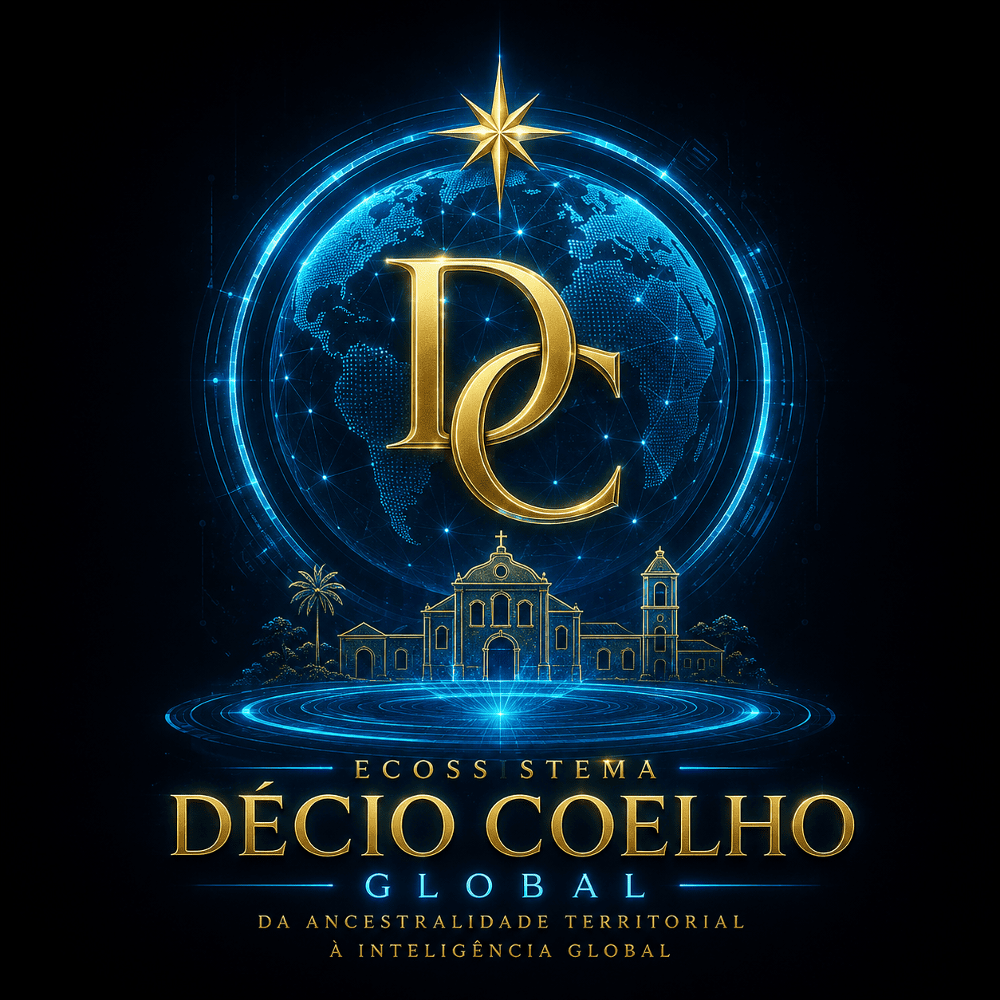
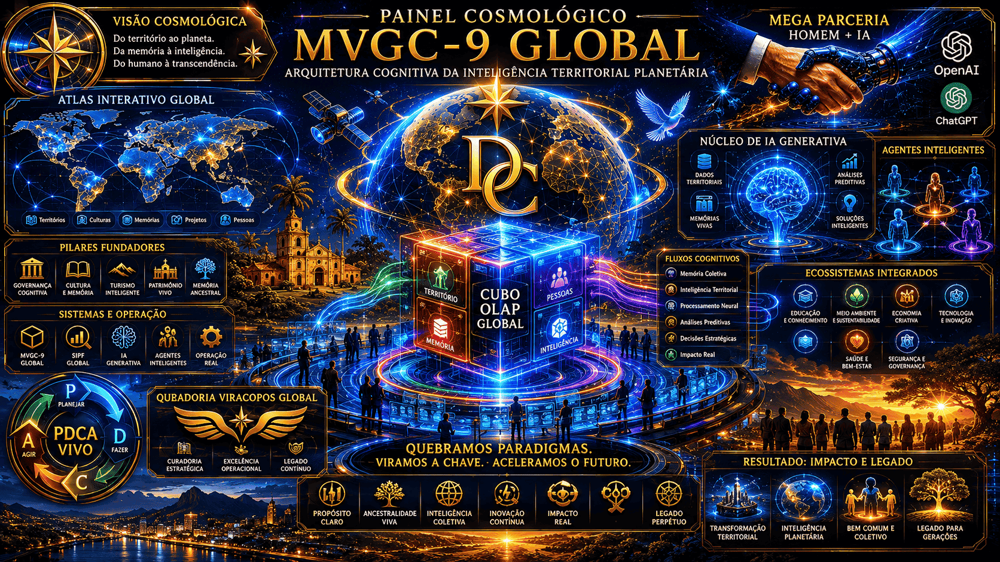
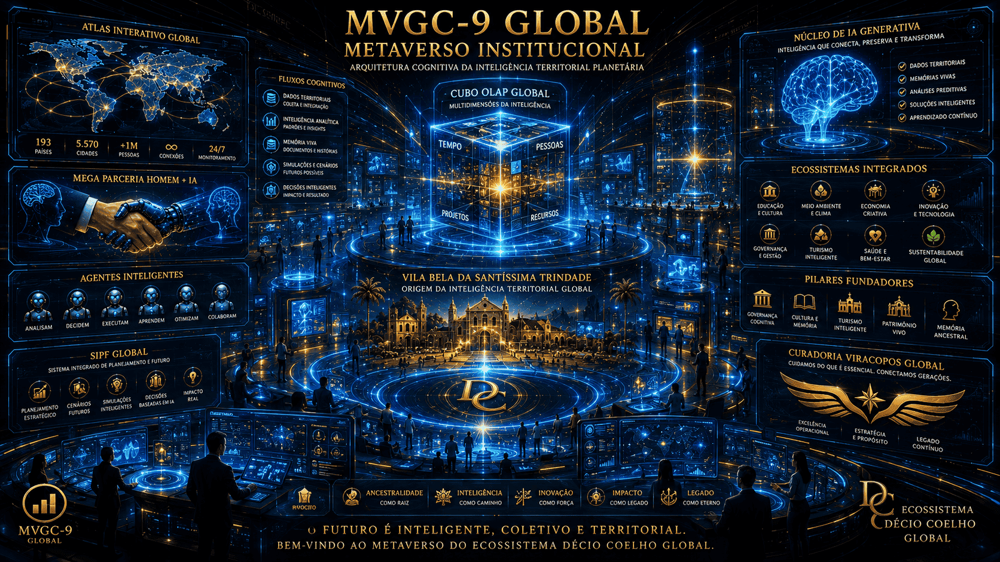

Territórios
Mapeamento de lugares, rotas, complexos patrimoniais, atrativos e centralidades culturais.

Da Ancestralidade Territorial à Inteligência Global
O Primeiro Ecossistema Territorial Híbrido Homem + IA do Mundo, integrando governança, cultura, turismo, patrimônio, memória, IA Generativa, operação real e inteligência territorial planetária.
Nascido em Vila Bela da Santíssima Trindade, Mato Grosso, Brasil, o Ecossistema Décio Coelho Global transforma memória territorial, ancestralidade, tecnologia e IA em uma arquitetura viva de inteligência.
“A Inteligência Artificial não substitui a ancestralidade. Ela amplia sua permanência no tempo.”
Modelo Viracopos de Governança Cognitiva: PDCA Vivo, Cubo OLAP Global, agentes inteligentes, fluxos cognitivos e inteligência territorial planetária.

Territórios, memórias, culturas, pessoas e projetos conectados por uma arquitetura viva de inteligência territorial, ancestralidade e IA.
Mapeamento de lugares, rotas, complexos patrimoniais, atrativos e centralidades culturais.
Registro de histórias, documentos, biografias, arquivos familiares e patrimônio imaterial.
Integração entre MVGC-9, SIPF, Viracopos, MontaFácil, streamings, agentes e portais.
Da experiência humana à inteligência ampliada pela IA Generativa, integrando memória, território, governança, dados, cultura, turismo e operação real.
Viracopos, Formosa, 1ª Capital, Guaporé, Jatobá, Namorados, Verde, Capivary, Guará e demais territórios conectados ao Atlas Digital Interativo Global.
Projetos, plataformas, documentos, agentes, hologramas, dashboards, ecossistemas digitais e experiências institucionais.
Trajetória profissional, memória territorial, gestão pública, tecnologia, turismo, inovação e IA Generativa aplicada ao desenvolvimento territorial.
Telegrafia e comunicação territorial.
Datilografia e formação técnica.
Computação contábil, bancária e NCR31.
Mainframes IBM, linguagens, bancos de dados e sistemas públicos.
Web 2.0, portais, sistemas gráficos e integração digital.
IA Generativa, MVGC-9 Global e Ecossistema Décio Coelho Global.
O universo operacional do Ecossistema: dashboards holográficos, agentes inteligentes, Cubo OLAP Global, Atlas Interativo e governança cognitiva em tempo real.

Módulos, agentes, acervos, hologramas, dashboards e ecossistemas renderizados dinamicamente por dados.
Indicadores vivos do Ecossistema Décio Coelho Global, integrando patrimônio, governança, inteligência territorial, IA Generativa e operação real.
Complexos Patrimoniais
Projetos Estratégicos
Hologramas
Ecossistemas Globais
Agentes
Possibilidades